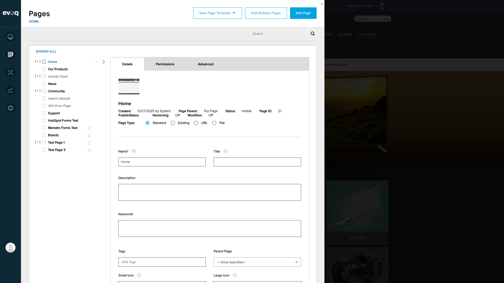

1. Get Page Details by ID
PASSSteps Taken:
- Navigated to Admin > Content > Pages
- Selected "Home" page from the page tree
- Verified page details loaded (Page ID: 21, Created by System)
- Selected "Test Page 1" from the page tree
- Verified different page details loaded (Page ID: 61, Created by SuperUser Account)

Figure 1: Home page details showing Page ID 21, metadata fields, and page type options

Figure 2: Test Page 1 details showing Page ID 61, different creator, and Delete button available